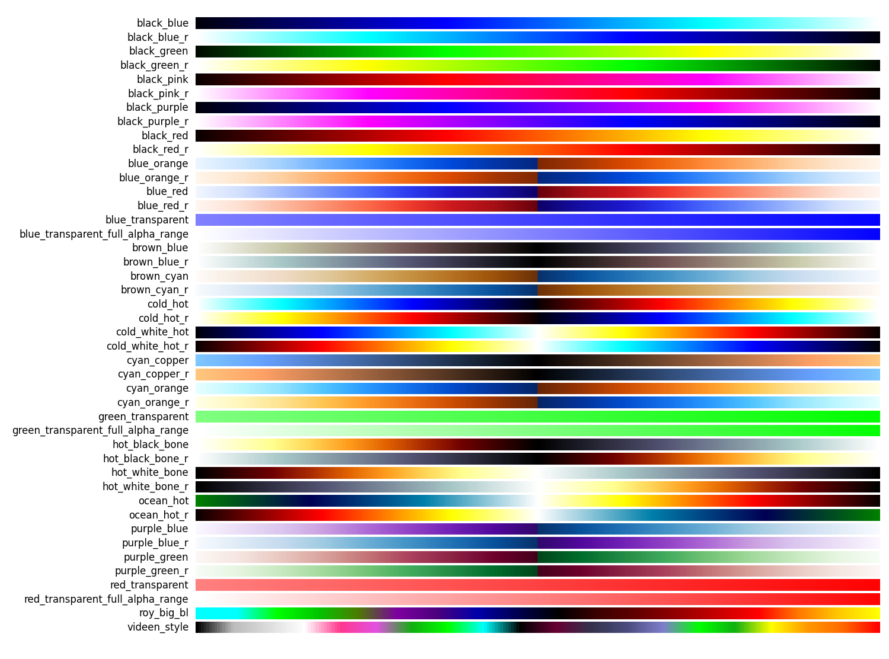
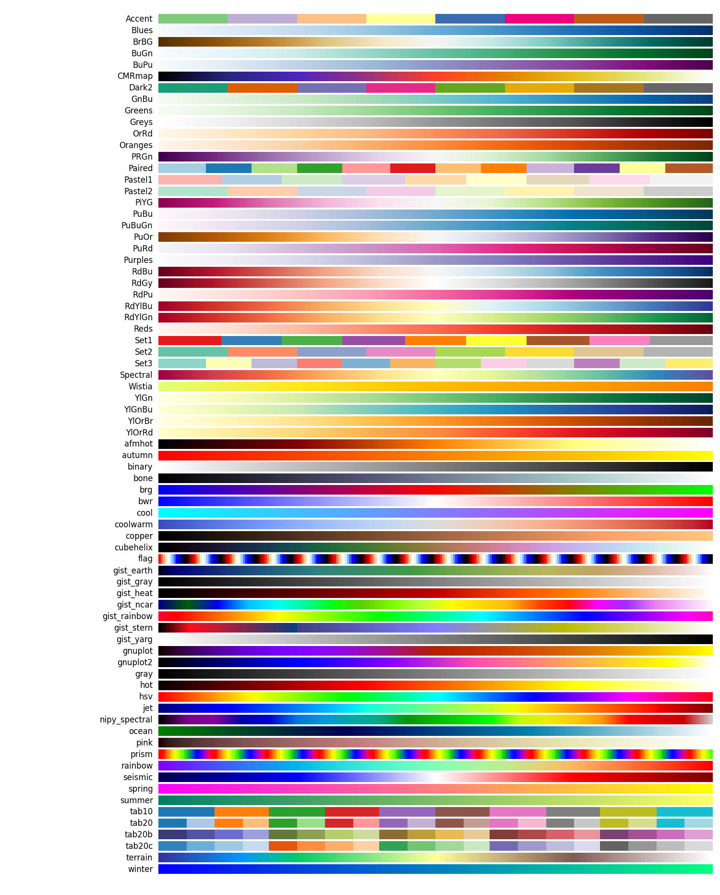
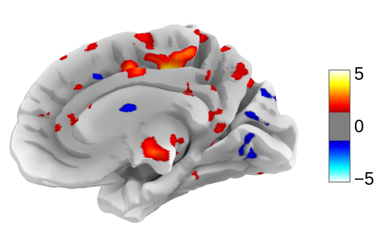

4. Plotting brain images¶
In this section, we detail the general tools to visualize neuroimaging volumes and surfaces with nilearn.
Nilearn comes with plotting function to display brain maps coming from
Nifti-like images, in the nilearn.plotting module.
Contents
Code examples
Nilearn has a whole section of the example gallery on plotting.
A small tour of the plotting functions can be found in the example Plotting tools in nilearn.
Finally, note that, as always in the nilearn documentation, clicking on a figure will take you to the code that generates it.
4.1. Different plotting functions¶
Nilearn has a set of plotting functions to plot brain volumes that are fined tuned to specific applications. Amongst other things, they use different heuristics to find cutting coordinates.
|
|
|
|
|
|
|
|
|
|
Functions for automatic extraction of coords based on
brain parcellations useful for |
|
Function for automatic plotting of network nodes (markers) and color coding them according to provided nodal measure (i.e. connection strength) as demonstrated in Example: Comparing connectomes on different reference atlases |
|
|
|
|
|
plot_img |
|

Warning
Opening too many figures without closing
Each call to a plotting function creates a new figure by default. When used in non-interactive settings, such as a script or a program, these are not displayed, but still accumulate and eventually lead to slowing the execution and running out of memory.
To avoid this, you must close the plot as follow:
>>> from nilearn import plotting
>>> display = plotting.plot_stat_map(img)
>>> display.close()
4.2. Different display modes¶
|
display_mode=’ortho’, cut_coords=[36, -27, 60]
|
display_mode=’z’, cut_coords=5
|
|
|
display_mode=’x’, cut_coords=[-36, 36]
|
|
display_mode=’y’, cut_coords=1
|
|
display_mode=’z’, cut_coords=1, colorbar=False
|
|
display_mode=’xz’, cut_coords=[36, 60]
|
display_mode=’yx’, cut_coords=[-27, 36]
|
|
|
display_mode=’yz’, cut_coords=[-27, 60]
|
display_mode=’tiled’, cut_coords=[36, -27, 60]
|
|
display_mode=’mosaic’
|
|
|
Glass brain display_mode=’lzr’
|
|
Glass brain display_mode=’lyrz’
|


4.3. Available Colormaps¶
Nilearn plotting library ships with a set of extra colormaps, as seen in the image below
These colormaps can be used as any other matplotlib colormap.
4.4. Adding overlays, edges, contours, contour fillings, markers, scale bar¶
To add overlays, contours, or edges, use the return value of the plotting
functions. Indeed, these return a display object, such as the
nilearn.plotting.displays.OrthoSlicer. This object represents the
plot, and has methods to add overlays, contours or edge maps:
display = plotting.plot_epi(...)
display.add_edges(img)
|
|
|
display.add_contours(img, levels=[.5], colors=’r’)
|
display.add_contours(img, filled=True, alpha=0.7, levels=[0.5], colors=’b’)
|
|
display.add_overlay(img, cmap=plotting.cm.purple_green, threshold=3)
|
|
|
display.add_markers(coords, marker_color=’y’, marker_size=100)
|
|
display.annotate(scalebar=True)
|


4.5. Displaying or saving to an image file¶
To display the figure when running a script, you need to call
nilearn.plotting.show: (this is just an alias to
matplotlib.pyplot.show):
>>> from nilearn import plotting
>>> plotting.show()
The simplest way to output an image file from the plotting functions is to specify the output_file argument:
>>> from nilearn import plotting
>>> plotting.plot_stat_map(img, output_file='pretty_brain.png')
In this case, the display is closed automatically and the plotting function returns None.
The display object returned by the plotting function has a savefig method that can be used to save the plot to an image file:
>>> from nilearn import plotting
>>> display = plotting.plot_stat_map(img)
>>> display.savefig('pretty_brain.png')
# Don't forget to close the display
>>> display.close()
4.6. Surface plotting¶
Plotting functions required to plot surface data or statistical maps on a brain surface.
New in version 0.3.
|
|
|
4.7. Interactive plots¶
Nilearn also has functions for making interactive plots that can be seen in a web browser. There are two kinds of plots for which an interactive mode is available:
New in version 0.5: Interactive plotting is new in nilearn 0.5
New in version 0.9.0: Nilearn offers the possibility to select different plotting engines (either matplotlib or plotly) for most surface plotting functions.
4.7.1. 3D Plots of statistical maps or atlases on the cortical surface¶
For 3D surface plots of statistical maps or surface atlases, you have different options depending on what you want to do and the packages you have installed.
If you have plotly installed: Since Nilearn
0.9.0, it is possible to use plotly as the plotting engine in most surface plotting functions of Nilearn likeplot_surf,plot_surf_stat_map, orplot_surf_roi. By default these functions use matplotlib as the plotting engine which results in non-interactive plots. By settingengine='plotly', an interactive version of these plots will be automatically opened in your web browser. In addition, if you have kaleido installed, you can save the plots automatically to png files. Finally, the plotly figure returned can be further customized in order to make more elaborate plots.If you don’t have plotly:
If you don’t need to save the plots to png and want to interactively visualize the surface, you can rely on view functions:
view_img_on_surfwhich takes as input a volume statistical map and projects it on the cortical surface before making a 3D interactive plot.
view_surfwhich takes as input a surface map and a cortical mesh and produces a 3D interactive plot on the cortical surface.The last option is to rely on surface plotting functions (
plot_surf,plot_surf_stat_map,plot_surf_roi…) with the default matplotlib plotting engine. In this case, you will be able to save to png but you will lose the interactivity of the plots.
4.7.1.1. view_img_on_surf: Surface plot using a 3D statistical map¶
You can use view_img_on_surf to display a 3D statistical map projected on the
cortical surface:
>>> from nilearn import plotting, datasets
>>> img = datasets.fetch_localizer_button_task()['tmap']
>>> view = plotting.view_img_on_surf(img, threshold='90%', surf_mesh='fsaverage')
If you are running a notebook, displaying view will embed an interactive
plot (this is the case for all interactive plots produced by nilearn’s “view”
functions):

If you are not using a notebook, you can open the plot in a browser like this:
>>> view.open_in_browser()
This will open this 3D plot in your web browser:
Or you can save it to an html file:
>>> view.save_as_html("surface_plot.html")
4.7.1.2. view_surf: Surface plot using a surface map and a cortical mesh¶
You can use view_surf to display a 3D surface statistical map over
a cortical mesh:
>>> from nilearn import plotting, datasets
>>> destrieux = datasets.fetch_atlas_surf_destrieux()
>>> fsaverage = datasets.fetch_surf_fsaverage()
>>> view = plotting.view_surf(fsaverage['infl_left'], destrieux['map_left'],
... cmap='gist_ncar', symmetric_cmap=False)
...
>>> view.open_in_browser()

4.7.1.3. plot_surf_stat_map: Surface plot using a surface map and a cortical mesh¶
If you have plotly installed, you can also use plot_surf_stat_map with
the engine parameter set to “plotly” to display a statistical map over a
cortical mesh:
>>> from nilearn import plotting, datasets, surface
>>> fsaverage = datasets.fetch_surf_fsaverage()
>>> motor_images = datasets.fetch_neurovault_motor_task()
>>> mesh = surface.load_surf_mesh(fsaverage.pial_right)
>>> map = surface.vol_to_surf(motor_images.images[0], mesh)
>>> fig = plotting.plot_surf_stat_map(mesh, map, hemi='right',
... view='lateral', colorbar=True, threshold=1.2,
... bg_map=fsaverage.sulc_right, engine='plotly')
>>> fig.show()
4.7.2. 3D Plots of connectomes¶
For 3D plots of a connectome, use view_connectome. To see only markers,
use view_markers.
view_connectome: 3D plot of a connectome:
>>> view = plotting.view_connectome(correlation_matrix, coords, edge_threshold='90%')
>>> view.open_in_browser()

4.7.3. 3D Plots of markers¶
view_markers: showing markers (e.g. seed locations) in 3D:
>>> from nilearn import plotting
>>> dmn_coords = [(0, -52, 18), (-46, -68, 32), (46, -68, 32), (1, 50, -5)]
>>> view = plotting.view_markers(
>>> dmn_coords, ['red', 'cyan', 'magenta', 'orange'], marker_size=10)
>>> view.open_in_browser()

4.7.4. Interactive visualization of statistical map slices¶
view_img: open stat map in a Brainsprite viewer (https://github.com/simexp/brainsprite.js):
>>> from nilearn import plotting, datasets
>>> img = datasets.fetch_localizer_button_task()['tmap']
>>> html_view = plotting.view_img(img, threshold=2, vmax=4, cut_coords=[-42, -16, 52],
... title="Motor contrast")
in a Jupyter notebook, if html_view is not requested, the viewer will be inserted in the notebook:

Or you can open a viewer in your web browser if you are not in a notebook:
>>> html_view.open_in_browser()
Finally, you can also save the viewer as a stand-alone html file:
>>> html_view.save_as_html('viewer.html')